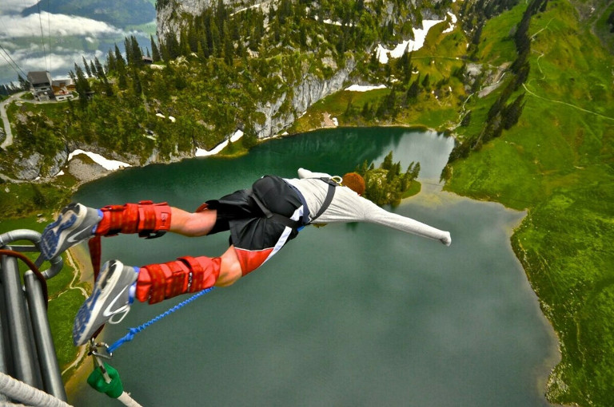

Банджи-джампинг
Банджи-джампинг — это прыжки с большой высоты, разумеется, со страховкой: человека привязывают к длинному резиновому канату, после чего экстремал, что называется, «шагает в пропасть» и получает несколько секунд свободного падения.
ри качественной страховке это развлечение совершенно безопасно, но незабываемые ощущения тому, кто рискнёт попробовать, обеспечены. В наши дни банджи-джампинг практикуется во всём мире.

Банджи-джампинг лишен основных истинно спортивных атрибутов. Его уникальное отличие от других адреналиновых мероприятий заключается именно в том, что он не подразумевает специальных навыков и особой физической подготовки. Прыгнуть может каждый, и именно поэтому во всем мире банджи является в первую очередь популярным аттракционом, доступным способом вскипятить кровь и испытать себя на прочность.
Этимология самого слова «банджи» является предметом спора увлеченных умов, так до сих пор и не пришедших к общему знаменателю. Но происхождение самого прыжка является достоянием истории.